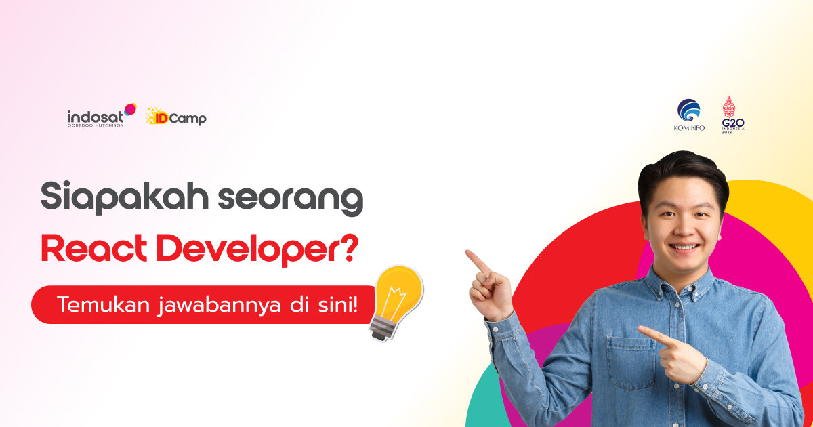
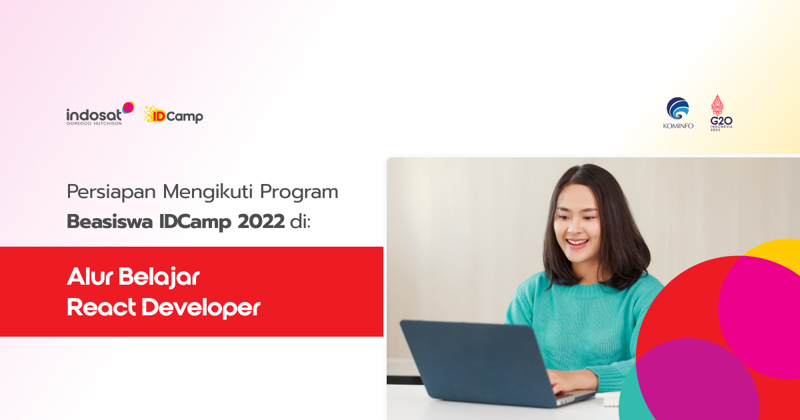

IDCamp 2022

IDCamp adalah sebuah program beasiswa dari Indosat Ooredoo Hutchison
untuk mencetak developer/programmer muda Indonesia yang siap bersaing
di dunia ekonomi digital.
Program ini merupakan salah satu program
Corporate Social Responsibility (CSR) Indosat Ooredoo Hutchison di pilar Pendidikan Digital sebagai upaya membangun bangsa Indonesia sebagai Digital Nation.
Modul pelatihan online IDCamp dikembangkan oleh Dicoding selaku Google Authorized Training Partners di Indonesia, bekerja sama dengan Indosat Ooredoo Hutchison dengan memanfaatkan use case yang sering ditemui dalam dunia industri khususnya telekomunikasi dan digital, serta diperkuat dengan metode mentoring secara online.
Siapakah Seorang React Developer?

Menurut Fullscale.io, seorang react developer adalah software developer
yang berspesialisasi dalam merancang dan membangun interaksi dalam website
atau aplikasi menggunakan framework React.
Secara umum, seorang React Developer harus memiliki keahlian sebagai berikut:
- Membangun website dengan HTML dan CSS
- Memahami JSX
- Memiliki kemampuan fundamental JavaScript
- Menggunakan Git
- Mengoperasikan Redux
Learning Path React Web Developer

Kurikulum lengkap yang didesain oleh tim expert Dicoding bersama para praktisi industri.
Siswa dipersiapkan untuk menjadi seorang React Developer berstandar global.
Buat Web Pertamamu di Sini

Pelajari komponen-komponen dasar HTML, CSS, dan JavaScript yang merupakan fondasi utama untuk menjadi web developer.
Kelas ini merupakan langkah ke-satu Anda untuk menjadi Front-End Web Developer.